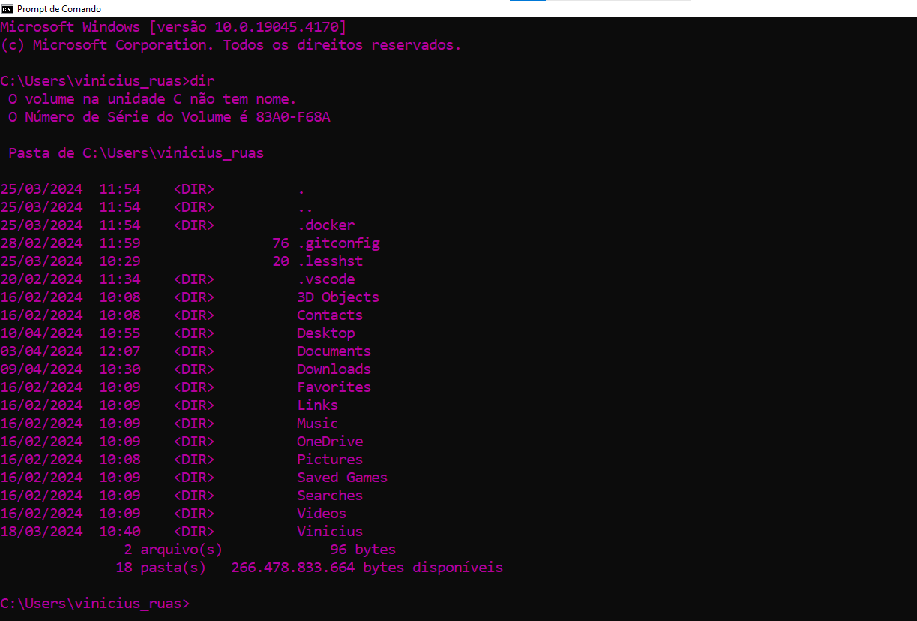

Conceito: A interface do sistema operacional é a maneira pela qual os usuários interagem com o sistema operacional e seus recursos. Existem dois tipos principais de interfaces de sistema operacional: a Interface de Linha de Comando (CLI - Command Line Interface) e a Interface Gráfica do Usuário (GUI - Graphical User Interface).
Interface de Linha de Comando (CLI):
- Na CLI, os usuários interagem com o sistema operacional através de comandos de texto inseridos em um terminal ou prompt de comando.
- Os comandos são geralmente baseados em texto e podem envolver palavras-chave, parâmetros e opções para executar diversas tarefas, como gerenciar arquivos, iniciar programas, configurar o sistema e muito mais.
- Exemplos de interfaces de linha de comando incluem o Terminal no macOS e Linux, e o Prompt de Comando no Windows.
- Embora possa parecer menos amigável para usuários inexperientes, a CLI oferece maior controle e eficiência para usuários avançados e administradores de sistemas.
